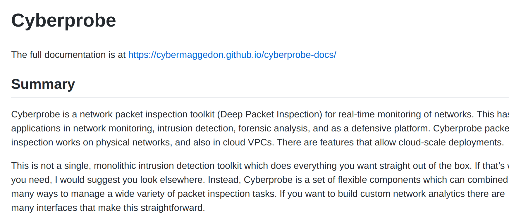
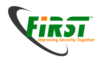
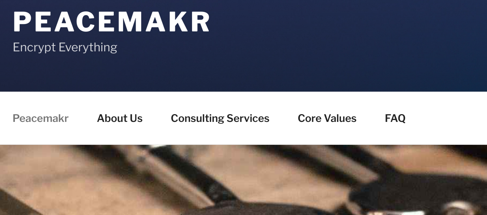

OWASP Bay Area has been a great place to learn and talk with industry and see what people are doing. Here is a short summary of things that stuck with me or I learned and wanted to share with you, now that this has come to a close and will resume next year.
Learninag about a tool that can manipulate DNS was great! We have added this tool to our list of possibilities for later games. This is the link to the documentation; I highly suggest understanding how to use this tool in environments.
This stuck as there isn't really a known list of framework for ethics in this field. The speaker brought up their efforts internationally and what they hope to achieve, knowing that every organization is different and unique.
This was a talk I won't forget; not because of the content, but because of the response from the audience. The speaker tried to sell people into his product from his startup and was quickly snuffed out by intelligent audience members who caught the flaws in the system and called him out on it. Know your audience!
Looking forward to next year's meetups in January for both SF and South Bay. If you see me, feel free to talk to me!